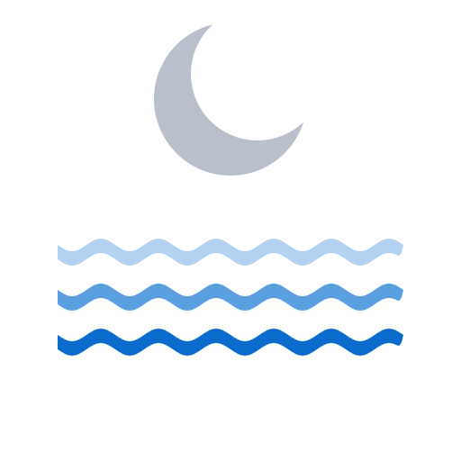

geal
ach
Map
📍
Tap the coast to get the tide there. Map data © OpenStreetMap contributors.
Map
♡
Details
▾
Marine Institute
Open-Meteo
Favourites
Offline — showing the last fetched prediction.
Surge — observed, separate from the prediction
geal
ach
Tides for a coastal place.
🐛 Report a bug
⚠️ Report a data inaccuracy
💡 Suggest a feature
Close